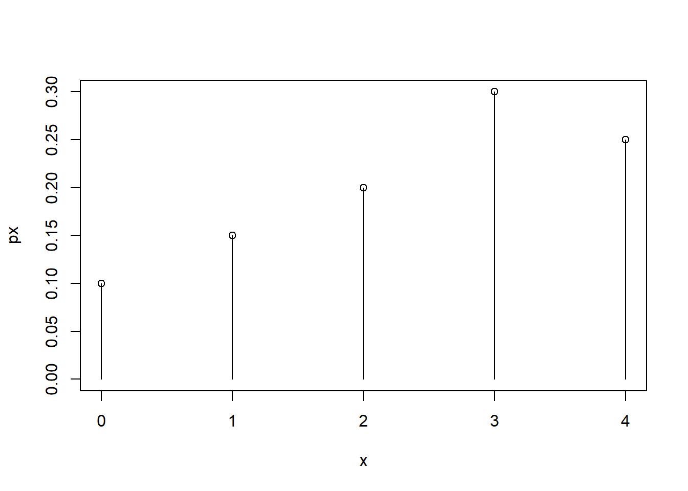
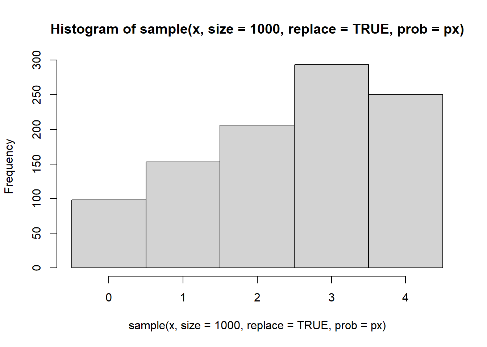
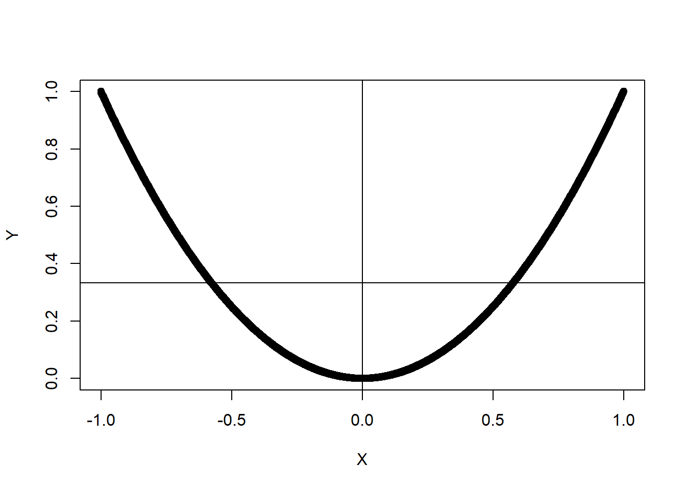
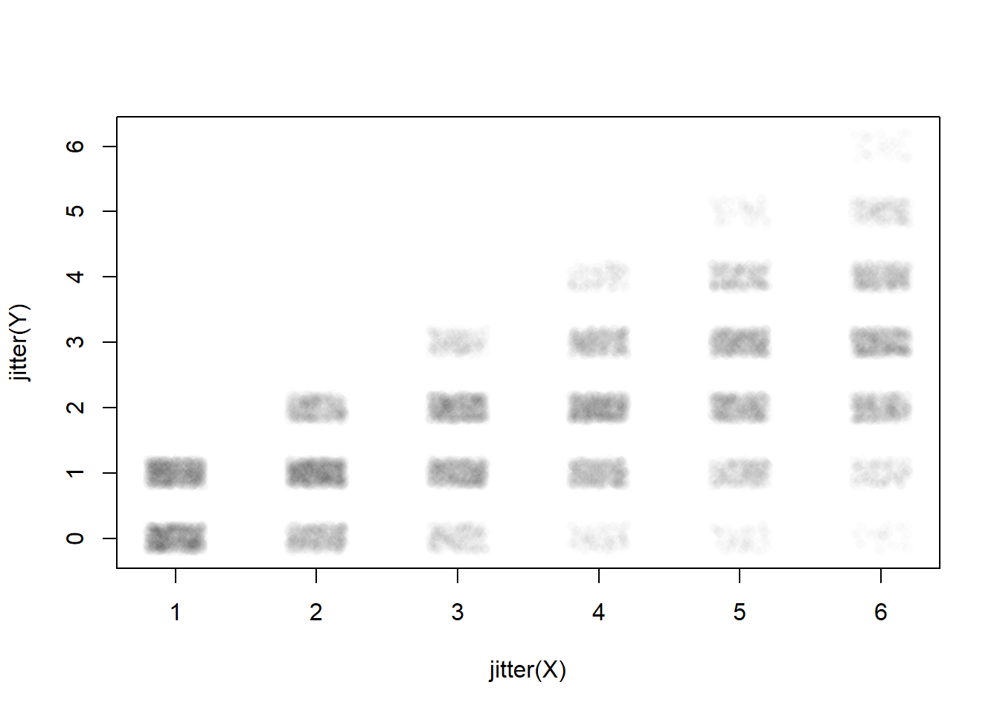

x <- 0:4 #Or c(0,1,2,3,4).
px <- c(.10, .15, .20, .30, .25)4 Probability and Random Variable R Examples
4.1 A Random Variable
\(X\) is a random variable that can take values 0,1,2,3 and 4 with probabilities .10, .15, .20, .30, and .25.
We can define the values and probabilities in vectors
We can visualize the probability mass function
plot(x,px, ylim=c(0, max(px)))
segments(x,0,x,px)
Simulating values from the distribution can be easily done using the sample() function. Every time this code chunk is run you should get 10 different values
sample(x, #first we provide the values to sample from
size=10, #how many values do we want to sample
replace=TRUE, #so it is possible to get the same value more than once.
prob=px) #finish by providing the probability vector [1] 1 3 0 1 4 1 1 3 3 2If we sample a bunch and plot a histogram it should resemble the pmf
hist(
sample(x, size=1000, replace=TRUE, prob=px),
breaks=seq(-.5,4.5,1) )
Expected value can be calculated using the formula. Remember that \(E(X)=\sum_k k \cdot Pr(X=k)\)
sum(x * px) # we can harness the fact that R works easily on vectors[1] 2.45We can check if this is the long-term average by sampling a lot and averaging the values
mean(
sample(x, size=1000, replace=TRUE, prob=px)
)[1] 2.44Variance can be calculated as well using the definition \(Var(X)=E((X-\mu)^2)\)
sum((x-2.45)^2*px)[1] 1.6475Or we can use the alternate formula \(Var(X)=E(X^2)-\mu^2\)
sum(x^2*px) - 2.45^2[1] 1.64754.2 Example
Two random variables that are Not independent, but have a 0 covariance
X = seq(-1,1,.001)
Y = X^2
plot(X,Y)
abline(h=mean(Y))
abline(v=mean(X))
cov(X,Y)[1] 1.39546e-17cor(X,Y)[1] 8.090705e-17#A estimate of the pdf of Y
plot(density(Y), xlim=c(0,1))
hist(Y)
4.3 Conditional Probability
Example: X: roll a 6 sided die Y: flip a coin x times, count the number of heads
We could ask the question: What is the covariance ?!?!?
Suppose we were to simulate doing this thing many many times. Each outcome from the simulation is representing one equally likely outcome, right?
This is the idea of Monte Carlo sampling - which we’ll look at soon
X <- sample(1:6, size=10000, replace=TRUE) #sample the values 1-6 with equal probability
Y <- vector("numeric", 10000)
for(i in 1:10000){
#represent heads as 1, tails as 0.
Y[i] <- sum(sample(0:1, size=X[i], replace=TRUE)) #sample x 0 or 1s and add them up - this counts the 1s
#next week we'll learn a faster way to do this using the binomial distribution
}
cor(X,Y)[1] 0.6754856plot(jitter(Y)~jitter(X), col=rgb(0,0,0,.01), pch=16)
4.4 Disease Screening
Say that the flu is currently infecting 3% of the population (prevelance). A person can take a flu test that has a sensitivity of 99% (i.e. if they have the virus, there is a 99% chance the test will give a positive result) and a specificity of 95% (i.e. if they don’t have the virus, there’s a 95% chance the test gives them a negative result).
The sensitivity is also known as the True positive rate (TPR). The complement of specificity is the False Positive Rate (FPR), and in this case it is 1-.95=.05 or 5%.
So a person takes the test and gets a positive test result, what is the probability that they actually have the flu? (This is known as the positive predictive value or PPV)
p.flu <- .03; p.noflu <- 1-p.flu
p.pos.given.flu <- .99; p.neg.given.flu <- 1-p.pos.given.flu
p.neg.given.noflu <- .95; p.pos.given.noflu <- 1-p.neg.given.noflu
# P(flu | pos) = P(flu)*P(pos|flu)/ [P(flu)*P(pos|flu) + P(noflu)*P(pos|noflu) ]
p.flu*p.pos.given.flu / (p.flu*p.pos.given.flu + p.noflu*p.pos.given.noflu)[1] 0.3797954Surprising? Well, if we didn’t do the test we’d guess a 5% chance of flu. Now that the test results are in that estimation increases by more than 7x to about 38%. Why isn’t it higher? There is a high chance of false positives muddying the waters.
The negative predictive value is the probability they truly do not have the flu if they get a negative test result.
# P(no flu | neg) = P(no flu) * P(neg | no flu) / [ P(no flu) * P(neg|no flu) + P(flu) * P(neg|flu)]
(1-p.flu)*p.neg.given.noflu / ((1-p.flu)*p.neg.given.noflu + (p.flu)*p.neg.given.flu)[1] 0.9996745Very high - but remember that 97% of the population does not have the flu. A negative test result has raised our subjective likelihood of no flu from 97% up to 99.97% - there’s still a chance this was a false negative but its not likely because the base rate of the flu is small to begin with.